워드프로세서-(구-1급) (2018-03-03 기출문제)
1과목: 워드프로세싱 일반
1. 다음 중 워드프로세서 관련 용어에 대한 설명으로 옳지 않은 것은?
- 워드 랩(Word Wrap): 단어 사이의 간격을 조절하여 공백을 없애고 문장의 양쪽 끝을 맞추는 것을 말한다.
- 보일러 플레이트(Boiler Plate): 작성 중인 문서 내에 머리말, 꼬리말, 주석 같은 것을 표시하기 위해 따로 설정한 구역이다.
- 래그드(Ragged): 문단의 각 행 중에서 오른쪽 끝이 정렬되지 않은 상태이다.
- 클립보드(Clipboard): 버퍼와 같은 기능을 수행하는 것으로 임시 기억 장소이다.
(정답률: 69%)

2. 다음 중 워드프로세서의 특징에 대한 설명으로 옳지 않은 것은?
- 문서의 편집 기능을 가진 소프트웨어로 손쉽게 다양한 형태의 문서를 만들 수 있다.
- 워드프로세서로 작성된 문서는 쉽게 변경할 수 있으므로 문서 보안에 주의하여야 한다.
- 인터넷을 이용하여 문서를 전송할 수 있어 쉽게 공유할 수 있다.
- 작성된 문서를 다른 응용 프로그램에서 사용할 수 없다.
(정답률: 83%)
3. 다음 중 워드프로세서가 가지고 있는 매크로 기능에 관한 설명으로 옳지 않은 것은?
- 자주 사용하는 어휘나 도형 등을 약어로 등록하여 필요할 때 약어만 호출하여 같은 내용을 반복 사용하는 기능이다.
- 작성한 매크로는 별도의 파일로 저장할 수 있으며 편집이 가능하다.
- 키보드 입력을 기억하는 '키 매크로'와 마우스 동작을 포함한 사용자의 모든 동작을 기억하는 '스크립트 매크로'가 있다.
- 동일한 내용의 반복 입력이나 도형, 문단 형식, 서식 등을 여러 곳에 반복 적용할 때 유용하다.
(정답률: 59%)
4. 다음 중 한글 코드에 관한 설명으로 옳지 않은 것은?
- 완성형 한글 코드는 정보교환용으로 사용되며 코드가 없는 문자는 사용할 수 없다.
- 유니코드는 각 국에서 사용중인 코드의 1문자당 값을 16비트로 통일하여 사용한다.
- 2바이트 조합형 한글 코드는 초성, 중성, 종성을 표시하는 원리로 국제규격과 완전한 호환이 될 수 있다.
- KS X 1001 완성형 한글 코드는 16비트로 한글이나 한자를 표현하며, 완성된 글자마다 코드 값을 부여해서 기억공간을 많이 차지한다.
(정답률: 50%)
5. 다음 보기의 기능을 가지고 있는 전자책의 보호기술은 어느 것인가?
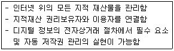
- DOI(Digital Object Identifier)
- DRM(Digital Rights Management)
- DW(Digital Watermarking)
- PKI(Public Key Infrastructure)
(정답률: 51%)
6. 다음 중 전자책에 대한 설명으로 옳지 않은 것은?
- 전자책은 저작물의 내용을 디지털 형태로 가공하여 전자 단말기를 통하여 볼 수 있는 출판물을 말한다.
- 전자책은 일반적으로 메모, 줄 긋기, 검색 기능을 지원한다.
- 전자책은 1차원고→기획/재편집→원고수정→콘텐츠 변화→최종원고→전자책 완성의 제작과정으로 제작된다.
- 전자책 파일의 형태를 유, 무선 통신망을 이용하여 전송할 수 있다.
(정답률: 74%)
7. 다음 중 올바른 문장작성법 및 맞춤법에 대한 설명으로 적절하지 않은 것은?
- 한글 자모의 수는 24자이다.
- 문장의 각 단어는 띄어 씀을 원칙으로 한다.
- 외래어는 특별한 원칙 없이 발음나는 대로 쓴다.
- 조사는 그 앞말에 붙여 쓴다.
(정답률: 80%)
8. 다음 중 공문서의 처리 원칙에 관한 설명으로 가장 옳지 않은 것은?
- 문서는 신중한 업무처리를 위해 당일보다는 기한에 여유를 두고 천천히 처리하도록 한다.
- 문서는 권한이 있는 사람에 의해 작성되고 처리되어야 한다.
- 사무 분장에 따라 각자의 직무 범위 내에서 책임을 가지고 처리해야 한다.
- 문서는 일정한 요건과 형식을 갖추어야 한다.
(정답률: 84%)
9. 다음 중 보고서 작성시 유의해야 할 사항으로 옳지 않은 것은?
- 읽는 사람의 요청이나 기대에 맞춘 보고서를 작성한다.
- 사실과 의견을 명확하게 구분하여 작성한다.
- 표와 그림 등으로 시각적인 효과를 나타내어 설득력을 높이게 작성한다.
- 각 사안별로 문장을 나누어 소항목에서 대항목으로 점진적으로 작성한다.
(정답률: 82%)
10. 다음 사내 문서의 구성에 대한 설명 중 옳지 않은 것은?
- 발신연월일은 문서 상단의 오른쪽에 표시하고 년, 월, 일을 생략할 경우 마침표(.)로 구분한다.
- 수신자명에는 문서를 받아볼 상대방으로 직위와 성명을 표시한다.
- 본문은 발신자명, 제목, 주문, 추신 등으로 구성된다.
- 문서 번호는 다른 문서와 구별되는 표시로 문서의 왼쪽 상단에 표시한다.
(정답률: 66%)
11. 다음 문장의 논리구조에 대한 설명으로 가장 적절한 것은?
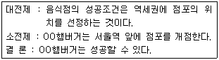
- 반증법
- 귀납법
- 대조법
- 연역법
(정답률: 67%)
12. 다음 중 교정기호와 함께 사용할 수 있는 교정 지시어로 옳지 않은 것은?
- 영문을 한글로
- 순서 바꾸기
- 대문자로
- 자간·행간 넓히기
(정답률: 57%)
13. 수정 전 문장을 수정 후 문서로 변경하였을 때 필요한 교정 부호로만 바르게 짝지은 것은?
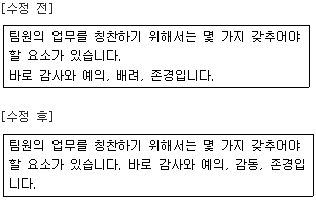
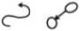
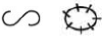
(정답률: 73%)
14. 다음은 문서관리 원칙 중 무엇에 대한 설명인가?
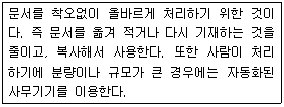
- 정확성
- 신속성
- 용이성
- 경제성
(정답률: 76%)
15. 다음 중 문서관리의 표준화에 대한 설명으로 옳지 않은 것은?
- 문서의 양식, 용지 규격, 글자 수의 표준화
- 문서의 발송 및 수신에 관한 수발 사무의 표준화
- 문서의 보존, 이관, 폐기 등의 표준화
- 문서의 분류방법, 분류번호, 분류체계, 관리방법의 표준화
(정답률: 58%)
16. 다음 보기의 회사관련 문서들을 회사명에 따라 명칭별 파일링 하여 분류 정리하고자 한다. 순서가 올바르게 나열된 것은?(일부 환경에서 보기의 특수기호가 보이지 않아서 괄호뒤에 다시 표기하여 둡니다.)
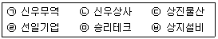
- ㉠ → ㉡ → ㉣ → ㉤ → ㉢ → ㉥(ㄱ→ㄴ→ㄹ→ㅁ→ㄷ→ㅂ)
- ㉢ → ㉥ → ㉠ → ㉡ → ㉤ → ㉣(ㄷ→ㅂ→ㄱ→ㄴ→ㅁ→ㄹ)
- ㉥ → ㉢ → ㉤ → ㉣ → ㉠ → ㉡(ㅂ→ㄷ→ㅁ→ㄹ→ㄱ→ㄴ)
- ㉥ → ㉢ → ㉣ → ㉤ → ㉠ → ㉡(ㅂ→ㄷ→ㄹ→ㅁ→ㄱ→ㄴ)
(정답률: 66%)
17. 다음 중 문서의 파일링 절차에 대한 순서를 가장 적절하게 나열한 것은?(일부 환경에서 정상적으로 보기가 보이지 않아서 괄호뒤에 다시 표기하여 둡니다.)
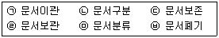
- ㉠-㉡-㉤-㉢-㉥-㉣(ㄱ-ㄴ-ㅁ-ㄷ-ㅂ-ㄹ)
- ㉤-㉡-㉠-㉢-㉥-㉣(ㅁ-ㄴ-ㄱ-ㄷ-ㅂ-ㄹ)
- ㉡-㉤-㉣-㉠-㉢-㉥(ㄴ-ㅁ-ㄹ-ㄱ-ㄷ-ㅂ)
- ㉣-㉠-㉡-㉤-㉢-㉥(ㄹ-ㄱ-ㄴ-ㅁ-ㄷ-ㅂ)
(정답률: 77%)
18. 내가 받은 이메일을 다른 동료에게 보내주려고 한다. 이때 사용할 수 있는 이메일의 기능은?
- 전달
- 반송
- 회신
- 참조
(정답률: 82%)
19. 다음 중 전자문서관리시스템을 사용하는 경우의 장점이 아닌 것은?
- 신속한 문서 조회 및 검색이 가능해서 생산성을 향상시킬 수 있다.
- 문서를 보관할 장소가 획기적으로 줄어들어서 사무환경을 쾌적하게 조성할 수 있다.
- 조건검색을 통해서 필요한 문서를 손쉽게 제공받을 수 있어서 노력을 줄일 수 있다.
- 텍스트문서를 이미지나 영상과는 별개로 관리하여 문서 고유의 특성에 맞춘 관리가 가능하다.
(정답률: 69%)
20. 다음 중 공문서의 기안 및 업무 관리에 대한 설명으로 옳지 않은 것은?
- 문서의 기안은 전자 문서로 하는 것을 원칙으로 한다.
- 수신한 종이문서를 수정하여 기안하는 경우에는 수신한 문서의 글자 색과 다른 색으로 수정한다.
- 각종 증명 발급, 회의록 및 단순 사실을 기록한 문서인 경우에는 발의자와 보고자 표시를 생략할 수 있다.
- 행정편람은 부서별로 작성하며 업무의 처리 절차 및 흐름도, 소관 보존 문서 현황 등을 포함하여야 한다.
(정답률: 43%)
2과목: PC 운영 체제
21. 다음 중 한글 Windows 7에서 창의 구성요소에 대한 설명으로 옳지 않은 것은?
- 검색 상자: 파일명이나 폴더명으로 원하는 항목을 검색할 수 있는 공간이다.
- 메뉴 표시줄: 창의 기본 기능을 실행할 수 있도록 각종 명령을 모아놓은 공간이다.
- 내용 표시 창: 선택한 폴더의 내용이 표시되며 기본적인 작업이 이루어지는 공간이다.
- 상태 표시줄: 현재 사용하는 드라이브와 폴더의 위치가 표시되며, 폴더 이름을 선택하면 해당 폴더로 이동하는 공간이다.
(정답률: 64%)
22. 다음 중 한글 Windows 7에서 사용하는 바로 가기 키의 설명으로 옳지 않은 것은?
- [윈도우 로고] 키: [시작] 메뉴를 표시한다.
- [윈도우 로고] 키 + [D]: 열려 있는 모든 창을 최소화 하거나 이전 크기로 복원한다.
- [윈도우 로고] 키 + [E]: Windows 탐색기를 실행하여 화면에 표시한다.
- [윈도우 로고] 키 + [R]: [검색 결과] 창을 표시한다.
(정답률: 62%)
23. 다음 중 한글 Windows 7에서 에어로(Aero)기능에 대한 설명으로 옳은 것은?
- 에어로 전환 3D: 작업 표시줄을 클릭하지 않고도 열려 있는 모든 창의 내용을 미리 볼 수 있다.
- 에어로 스냅: 창을 흔들어 다른 모든 열려 있는 창을 최소화할 수 있다.
- 에어로 세이크: 현재 실행중인 프로그램을 통해 열린 모든 창들의 축소판 미리보기가 가능하다.
- 에어로 피크: 열려 있는 창을 화면 가장자리로 드래그하여 창의 크기를 조절할 수 있다.
(정답률: 64%)
24. 다음 중 한글 Windows 7의 [작업 표시줄 및 시작 메뉴 속성] 창에서 할 수 있는 작업으로 옳지 않은 것은?
- 작업 표시줄의 잠금과 해제가 가능하다.
- 작업 표시줄의 위치를 위쪽, 아래쪽, 왼쪽, 오른쪽으로 설정할 수 있다.
- 작업 표시줄 기본 모양이나 색상 변경 등을 설정할 수 있다.
- 작업 표시줄 자동 숨기기를 설정할 수 있다.
(정답률: 63%)
25. 다음 중 한글 Windows 7의 '화면보호기 설정'창에서 바로 실행할 수 없는 것은?
- 화면 보호기 종류 선택
- 다시 시작할 때 로그온 화면 표시 여부 선택
- 대기 모드 실행 시간 설정
- 디스플레이 끄기 시간 설정
(정답률: 50%)
26. 다음 중 한글 Windows 7의 탐색기의 구성 요소에 관한 설명으로 옳지 않은 것은?
- '라이브러리'는 컴퓨터에 흩어져 있는 자료를 한 곳에서 보고 정리할 수 있는 가상의 폴더이다.
- '즐겨찾기'는 자주 사용하는 개체를 등록하여 해당 개체로 빠르게 이동하기 위해 사용한다
- '홈 그룹'은 여러 사용자들을 그룹으로 묶어서 계정이나 권한을 관리하는 기능이다.
- '컴퓨터'는 설치된 모든 구성요소를 표시하며, 각 구성요소를 관리할 수 있는 여러 기능이 있다.
(정답률: 63%)
27. 다음 중 한글 Windows 7에서 휴지통에 관한 설명으로 옳지 않은 것은?
- 휴지통의 파일은 필요할 때 복원하여 사용할 수 있으며 휴지통에서 파일을 실행할 수도 있다.
- 휴지통에 삭제한 파일이 들어가면 휴지통의 모양이 변경된다.
- 휴지통이 가득 차면 가장 최근에 삭제된 파일이나 폴더가 들어갈 수 있는 공간을 확보하기 위해 휴지통을 자동으로 정리한다.
- 휴지통의 크기는 드라이브마다 다르게 설정할 수 있다.
(정답률: 67%)
28. 다음 중 한글 Windows 7의 보조프로그램인 [원격 데스크톱 연결]에 대한 설명으로 옳지 않은 것은?
- 원격 데스크톱 연결이란 현재의 컴퓨터 앞에서 원격 위치의 데스크톱 컴퓨터에 연결하여 응용 프로그램을 해당 콘솔 앞에서 실행하고 파일, 네트워크 리소스를 액세스할 수 있는 것을 말한다.
- 원격에 있는 컴퓨터에서 음악 또는 기타 소리를 사용자의 컴퓨터에서 재생하거나 녹음할 수 있다.
- 원격 작업을 하려면 네트워크에 연결되어 있는 컴퓨터와 제 2의 원격 컴퓨터가 있어야 한다.
- 원격 지원을 허용하려면 [시작]-[제어판]-[시스템] 왼쪽 창의 [원격 설정]에서 [하드웨어] 탭을 선택하여 원격으로 제어하도록 허용과 최대 시간 등을 설정한다.
(정답률: 57%)
29. 다음 중 한글 Windows 7의 보조프로그램인 [워드패드]에 대한 설명으로 옳지 않은 것은?
- 워드패드 문서에는 다양한 서식과 사진, 그림판 파일과 같은 그래픽을 포함할 수 있다.
- 마이크로소프트 워드문서(DOC)나 일반 텍스트는 지원하지만, 유니코드 형식의 텍스트 파일은 지원하지 않는다.
- 문서 전체나 일정 부분에 대해 글꼴의 크기, 글꼴의 종류, 단락 설정을 지정할 수 있다.
- 글머리 기호, 들여쓰기, 내어쓰기, 탭기능, 찾기, 바꾸기 기능을 설정할 수 있다.
(정답률: 65%)
30. 다음 중 한글 Windows 7에서 제공하는 파일 압축이나 압축 풀기에 관한 설명으로 옳지 않은 것은?
- 압축된 파일은 저장 공간을 적게 차지한다.
- 압축되지 않은 파일은 압축된 파일 보다 빠르게 다른 컴퓨터로 전송할 수 있다.
- 여러 파일을 하나의 압축 폴더로 묶을 수 있다.
- 압축 시 암호를 지정하거나 분할 압축이 가능하다.
(정답률: 73%)
31. 다음 중 한글 Windows 7에서 사용할 수 있는 유틸리티로 [Windows 사진 뷰어]에 관한 설명으로 옳지 않은 것은?
- 사용 중인 컴퓨터에 있거나 다른 위치에 저장된 디지털 사진이나 동영상을 볼 수 있다.
- 디지털 사진을 인쇄하거나 온라인 사진 인화 서비스를 사용하여 사진 인화를 주문할 수 있다.
- 디지털 사진을 CD나 DVD로 보관하기 위하여 디스크 굽기를 할 수 있다.
- 전자 메일 메시지의 첨부 파일로 다른 사람에게 사진을 보낼 수 있다.
(정답률: 41%)
32. 다음 중 한글 Windows 7에서 문서 인쇄에 대한 설명으로 옳지 않은 것은?
- 프린터 아이콘을 더블클릭하면 인쇄중인 문서의 이름, 소유자는 표시되지만 포트, 페이지 수는 표시되지 않는다.
- 대기 중인 문서에 대해 용지방향, 용지 공급, 인쇄매수와 같은 설정은 볼 수 있으나 문서 내용을 변경할 수는 없다.
- 인쇄관리자 창에서 필요에 따라 인쇄할 문서의 인쇄 순서를 변경할 수 있다.
- 문서 이름을 선택하여 바로 가기 메뉴에서 인쇄를 취소하거나 일시중지, 다시 시작을 할 수 있다.
(정답률: 60%)
33. 다음 중 한글 Windows 7의 설치된 기본 프린터의 [인쇄 작업 목록 보기] 창에서 가능한 작업으로 옳지 않은 것은?
- 인쇄 일시 중지
- 설치된 프린터 제거
- 프린터 속성 지정
- 인쇄 기본 설정 지정
(정답률: 66%)
34. 다음 중 한글 Windows 7의 [제어판]에 있는 [사용자 계정]에 관한 설명으로 옳지 않은 것은?
- 계정의 유형에는 관리자 계정, 표준 사용자 계정, Guest 계정 등이 있다.
- 사용자의 계정 이름이나 유형을 변경할 수 있다.
- 표준 사용자 계정으로 로그인한 경우 자녀 보호 설정을 할 수 있다.
- 각 사용자 계정마다 암호를 설정할 수 있다.
(정답률: 65%)
35. 다음 중 한글 Windows 7에서 발생하는 문제의 해결 방법으로 옳지 않은 것은?
- 사용 중인 프로그램이 응답하지 않을 경우 [Windows 작업 관리자] 창을 열어 해당 프로그램에 대해 작업 끝내기를 한다.
- 메모리가 부족하여 프로그램을 실행할 수 없을 경우 가상 메모리의 크기를 적절히 설정한다.
- 정상적으로 부팅이 안 되는 경우 안전 모드로 부팅하여 문제를 해결한 후 표준 모드로 재부팅한다.
- 하드 디스크의 공간이 부족할 경우 [디스크 조각 모음]을 실행하여 디스크 공간을 확보한다.
(정답률: 63%)
36. 다음 중 한글 Windows 7에서 [작업 관리자] 창에 대한 설명으로 옳지 않은 것은?
- 바탕 화면의 빈 영역에서 바로 가기 메뉴의 [작업 관리자 시작]을 클릭하면 작업 관리자 창을 열 수 있다.
- 현재 컴퓨터에서 실행되고 있는 프로세스의 개수를 알 수 있다.
- 현재 실행되고 있는 프로그램을 종료시킬 수 있다.
- 네트워크에 연결되어 있는 경우 네트워크 상태를 보고 작동 상태를 확인할 수 있다.
(정답률: 49%)
37. 다음 중 한글 Windows 7에서 [프로그램 및 기능] 창을 이용하여 할 수 있는 작업으로 옳지 않은 것은?
- 시스템에 설치되어 있는 응용 프로그램을 제거할 수 있으나 변경할 수는 없다.
- 설치된 업데이트를 보거나 제거할 수 있다.
- Internet Explorer나 인터넷 정보 서비스 등의 Windows 기능을 사용하거나 사용 안함을 설정할 수 있다.
- 현재 설치된 프로그램의 개수나 각 프로그램의 이름, 게시자, 설치 날짜, 크기, 버전을 확인할 수 있다.
(정답률: 58%)
38. 다음은 한글 Windows 7에서 네트워크 장비 중 무엇에 대한 설명인가?
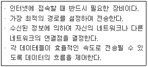
- 허브(Hub)
- 리피터(Repeater)
- 게이트웨이(Gateway)
- 라우터(Router)
(정답률: 55%)
39. 다음 중 한글 Windows 7에서 인터넷을 연결하기 위한 TCP/IP 속성 창에서 서브넷 마스크에 관한 설명으로 옳은 것은?
- DHCP를 이용한 유동 IP주소를 설정할 때 사용한다.
- IP주소와 결합하여 네트워크 주소와 호스트 주소를 구분하기 위하여 사용한다.
- IPv4 주소 체계에서는 256비트의 주소로 구성된다.
- 네트워크 사이에 IP 패킷을 라우팅할 때 사용되는 주소이다.
(정답률: 57%)
40. 다음 중 한글 Windows 7의 Internet Explorer를 사용하기 위하여 [인터넷 옵션] 창의 [일반] 탭에서 설정할 수 있는 내용으로 옳지 않은 것은?
- Internet Explorer를 시작할 때 표시되는 기본 홈페이지를 설정할 수 있다.
- 임시 파일, 열어본 페이지 목록, 쿠키, 정보를 삭제할 수 있다.
- Internet Explorer의 설정을 기본 상태로 다시 설정할 수 있다.
- 웹 페이지의 색 및 글꼴, 언어, 접근성 등을 설정할 수 있다.
(정답률: 29%)
3과목: 컴퓨터 및 정보활용
41. 다음 중 4세대 컴퓨터의 특징으로 볼 수 없는 것은?
- 개인용 컴퓨터(PC)가 등장하였다.
- 다중 프로그램이 처음으로 도입되었다.
- 가상 기억 장치가 도입되었다.
- 기억 소자로 고밀도 집적 회로(LSI)가 사용되었다.
(정답률: 56%)
42. 다음 중 정밀 과학기술 연구를 위해 속도나 온도와 같은 연속 데이터를 처리하는 용도로 특수 목적 컴퓨터를 사용한다고 했을 때, 이 컴퓨터에 대한 컴퓨터 규모와 데이터 형태, 그리고 하드웨어 용도의 분류로 옳은 것은?
- 미니 컴퓨터 –아날로그 컴퓨터 –범용 컴퓨터
- 슈퍼 컴퓨터 –아날로그 컴퓨터 –전용 컴퓨터
- 메인프레임 컴퓨터 –디지털 컴퓨터 –전용 컴퓨터
- 메인프레임 컴퓨터 –하이브리드 컴퓨터 –범용 컴퓨터
(정답률: 63%)
43. 중앙처리장치에서의 명령어 형식 중 하나의 연산 부호와 하나의 주소로 구성되어 있어, 레지스터와 레지스터 간이나 기억장치와 연산 레지스터 간의 연산에 사용하는 명령어 형식은?
- 0주소 명령
- 1주소 명령
- 2주소 명령
- 3주소 명령
(정답률: 60%)
44. 다음 중 입출력장치에 대한 설명으로 옳지 않은 것은?
- 레이저 프린터나 잉크젯 프린터에서 주로 사용하는 인쇄속도의 단위는 PPM이다.
- 디지타이저는 태블릿 위에 광펜을 움직여 도형이나 그림 등의 좌표를 입력하는 장치이다.
- 플로터는 그래프, CAD 도면, 그림, 사진 등을 정밀하게 입력할 때 사용하는 입력장치이다.
- 스캐너, 터치 스크린, 디지털카메라는 입력장치이다.
(정답률: 48%)
45. 다음 중 컴퓨터에서 사용하는 응용 소프트웨어인 데이터베이스 관리 시스템(DBMS)의 특징으로 옳지 않은 것은?
- 데이터의 중복성을 최소화하여 저장 공간을 절약할 수 있다.
- 데이터의 일관성과 무결성을 유지할 수 있다.
- 데이터의 논리적‧물리적 독립성을 방지할 수 있다.
- 다수 사용자의 동시 실행 제어가 가능하다.
(정답률: 49%)
46. 다음 중 웹 프로그래밍 언어에 대한 설명으로 알맞은 것은?
- 펄(Perl) : 문자 처리가 강력하고 이식성이 좋으며 주로 유닉스계의 운영 체계(OS)로 사용되고 있는 프로그램 언어이다.
- SGML : 하이퍼텍스트 생성 언어(HTML) 기능을 확장할 목적으로 월드 와이드 웹 컨소시엄(WWW Consorsium)에서 표준화한 페이지 기술 언어이다.
- ODA : 대화식 단말기에서 교육 및 연구 목적으로 이용하는 연산을 간략하게 표현할 수 있도록 개발한 프로그래밍 언어이다.
- APL : 문자나 도형, 화상 등이 섞여 있는 멀티미디어 문서를 이종(異種) 시스템 간에 상호 교환하기 위한 문서 구조와 인터페이스 언어이다.
(정답률: 45%)
47. 다음 중 아래의 보기에서 설명하는 운영체제의 운영 방식으로 옳은 것은?
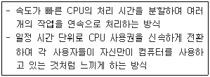
- 일괄 처리 시스템
- 듀플렉스 시스템
- 분산 처리 시스템
- 시분할 시스템
(정답률: 63%)
48. 다음 중 오디오 파일 포맷에 대한 설명으로 옳지 않은 것은?
- 비압축 포맷으로는 WAV, AIFF, AU 등이 있다.
- MP3는 MPEG-3의 오디오 규격으로 개발된 손실압축 포맷으로 컴퓨터 디스크 등의 PCM 음성을 일반적으로 들을 만한 음질로 압축하여 크기를 1/20까지 줄일 수 있다.
- WMA는 마이크로소프트사가 개발한 윈도 미디어 오디오 포맷으로 디지털 권리 관리(DRM)기능을 포함하고 있다.
- 오디오 데이터를 저장하는 방식에는 압축 방식과 비압축 방식이 있으며, 압축하는 방식에 따라서 손실 압축 포맷과 비 손실 압축 포맷으로 나뉜다.
(정답률: 66%)
49. 홈페이지를 제작할 때 어떤 사용자(장애인, 노인 등)나 어떠한 기술 환경에서도 사용자가 전문적인 능력 없이 웹 사이트에서 제공하는 모든 정보를 이용할 수 있도록 보장하는 것을 무엇이라고 하는가?
- 정보 확실성
- 데이터 독립성
- 웹 접근성
- 웹 이용성
(정답률: 65%)
50. 다음 중 정보통신기술에 대한 설명으로 적당하지 않은 것은?
- 스마트 그리드는 기존의 전력망에 정보 기술을 접목하여 전력 공급자와 소비자가 쌍방향으로 실시간 정보를 교환함으로써 에너지 효율을 최적화하고 새로운 부가가치를 창출하는 차세대 전력망을 말한다.
- NFC는 아주 가까운 거리에 있는 두 장치 간에 쌍방향 무선 데이터 통신을 제공하는 근거리 무선통신의 표준으로 보안성이 뛰어나고 안정적이고 처리속도가 빨라 각종 카드, 핸드폰 결제, 문 열쇠 등에 이용되고 있다.
- RFID는 모든 사물에 부착된 태그 또는 센서를 통해 탐지된 사물의 인식 정보는 물론 주변의 온도, 습도, 위치정보, 압력, 오염 및 균열 정도 등과 같은 환경 정보를 실시간으로 네트워크와 연결하여 수집하고 관리하는 네트워크 시스템이다.
- M2M은 사물에 센서와 통신 기능을 부과하여 지능적으로 정보를 수집하고 상호 전달하는 네트워크를 말한다.
(정답률: 47%)
51. 다음 중 정보 통신망에 대한 설명으로 옳지 않은 것은?
- 이더넷은 CSMA/CA기술을 사용하며 전송 매체로는 BNC 케이블 또는 UTP, STP 케이블을 사용한다.
- 공중교환전화망(PSTN)은 세계의 공중 회선 교환 전화망들이 얽혀있는 전화망으로 원래 고정 전화의 아날로그 전화망이었으나 현재는 완전히 디지털화 되었다.
- 광대역 통합망(BcN)은 개방형 통신망으로 통신, 방송, 인터넷이 융합된 광대역 멀티미디어 서비스를 언제 어디서나 끊김 없이 안전하게 이용할 수 있는 품질보장형 통합 네트워크이다.
- FDDI란 토큰 링 방식에 광섬유를 전송매체로 사용해서 고속 전송을 가능하게 하는 기술로 듀얼 링에 연결되며 100Mbps의 속도로 데이터전송이 가능하다.
(정답률: 37%)
52. 다음 중 컴퓨터 범죄의 예방과 대책에 대한 설명으로 옳지 않은 것은?
- 자신의 ID를 빌려주거나 타인의 ID를 사용할 경우에는 신중을 기하여야 하며, 처음 만든 패스워드는 변경하지 않아야 하고 다른 사용자에게 노출되지 않도록 한다.
- 중요한 자료를 암호화하여 저장하고 정보 손실에 대비하여 백업을 철저히 한다.
- 전자 상거래를 이용하거나 개인의 정보를 제공할 경우 반드시 이용 약관이나 개인 정보 보호 방침을 숙지한다.
- 백신 프로그램을 설치하고 수시로 업데이트를 실행하여 최신 버전을 유지한다.
(정답률: 77%)
53. 다음 중 WPAN 기술의 설명으로 옳지 않은 것은?
- 적외선 통신이란 전파 대신 빛을 매체로 통신을 하는 것으로 'IrDA'라는 통신의 표준 규격을 사용한다.
- 지그비(Zigbee)는 빌딩 자동화나 홈 보안시스템 등의 자동화에 적절한 통신 기술이다.
- 블루투스는 근거리 무선 통신 기술의 표준이라 할 수 있다.
- FTTH는 전파를 이용해 먼거리에서 정보를 인식하는 기술이다.
(정답률: 48%)
54. 다음 보기 중 전자우편을 위한 프로토콜끼리 올바르게 짝지어진 것은?(모바일 기기 종류에 따라 보기내용이 보이지 않는 경우가 있어서 괄호 뒤에 다시 표기 하여 둡니다.)
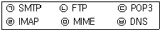
- ㉡, ㉢, ㉣, ㉤(ㄴ, ㄷ, ㄹ, ㅁ)
- ㉠, ㉢, ㉣, ㉤(ㄱ, ㄷ, ㄹ, ㅁ)
- ㉠, ㉡, ㉣, ㉤(ㄱ, ㄴ, ㄹ, ㅁ)
- ㉠, ㉢, ㉣, ㉥(ㄱ, ㄷ, ㄹ, ㅂ)
(정답률: 56%)
55. 다음 중 정보 사회의 부작용과 가장 관련이 없는 것은?
- 정보의 과다로 인한 혼란과 정보의 편중에 의한 계층 간의 정보 차이가 생긴다.
- 인간관계에서의 유대감이 강화되고, 인간의 고유 판단 능력이 향상된다.
- 기술의 인간 지배와 이로 인한 인간의 소외 현상이 생긴다.
- 정보 이용 기회의 불균등으로 인하여 정보 소외 현상이 생긴다.
(정답률: 75%)
56. 다음 가)와 나)에 해당하는 사이버 범죄의 용어로 가장 알맞게 짝지어진 것은?
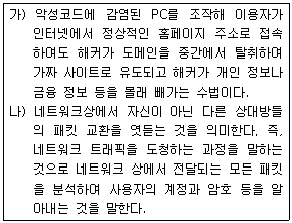
- 가) 스푸핑(Spoofing), 나) 스미싱(Smishing)
- 가) 피싱(Phishing), 나) 스푸핑(Spoofing)
- 가) 스미싱(Smishing)， 나) 서비스 거부 공격(DoS)
- 가) 파밍(Pharming)， 나) 스니핑(Sniffing)
(정답률: 61%)
57. 다음 중 컴퓨터 바이러스 감염 증상으로 옳지 않은 것은?
- 시스템 파일이 손상되어 부팅이 정상적으로 수행되지 않을 수 있다.
- 감염된 실행 파일은 실행되지 않거나 속도가 빨라질 수 있다.
- 특정한 날짜가 되면 컴퓨터 화면에 이상한 메시지가 표시될 수 있다.
- 디스크를 인식 못하거나 감염 파일의 크기가 커질 수 있다.
(정답률: 72%)
58. 다음 중 컴퓨터 시스템의 정보 보안 기법에서 공개키 암호화 기법에 관한 설명으로 옳지 않은 것은?
- 암호화나 복호화 속도가 느리며, 알고리즘이 복잡하고 파일의 크기가 크다.
- 전자 서명에 많이 사용된다.
- 데이터를 암호화할 때 사용하는 키는 비밀로 하고, 복호화 하는 키는 공개한다.
- 비대칭 암호화기법이라고도 하며, 대표적인 암호화 방식으로 RSA가 있다.
(정답률: 53%)
59. 다음 중 정보통신기술(ICT)의 기술적인 용어에 관한 설명으로 옳지 않은 것은?
- 유비쿼터스 컴퓨팅(Ubiquitous Computing)은 언제 어디서나 어떤 기기를 통해서도 컴퓨팅이 가능한 환경을 제공한다.
- 사물 인터넷(IoT)은 모든 사물을 네트워크로 연결하여 인간과 사물 간의 서로 소통하기 위한 정보통신 환경이다.
- 클라우드 컴퓨팅(Cloud Computing)은 HW/SW 등의 자원을 자신이 필요한 만큼 빌려서 비용을 지불하는 방식의 서비스이다.
- 텔레매틱스(Telematics)는 지리적으로 분산되어 있는 컴퓨터를 초고속 인터넷으로 연결하여 공유하기 위한 기술이다.
(정답률: 58%)
60. 다음에서 설명하는 신기술은 무엇인가?
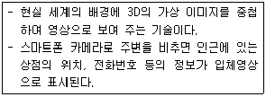
- SSO(Single Sign On)
- 증강현실(Augmented Reality)
- RSS(Rich Site Summary)
- 가상현실(Virtual Reality)
(정답률: 70%)
- 워드 랩(Word Wrap): 문서 작성 시 한 줄에 들어갈 수 있는 글자 수를 넘어가면 자동으로 다음 줄로 넘겨주는 기능을 말한다.
- 보일러 플레이트(Boiler Plate): 문서 작성 시 자주 사용되는 내용을 미리 작성해 놓은 템플릿을 말한다.
- 래그드(Ragged): 문단의 각 행 중에서 왼쪽과 오른쪽 끝이 정렬되지 않은 상태를 말한다.
- 클립보드(Clipboard): 복사, 잘라내기, 붙여넣기 등의 작업을 할 때 임시로 저장하는 영역을 말한다.